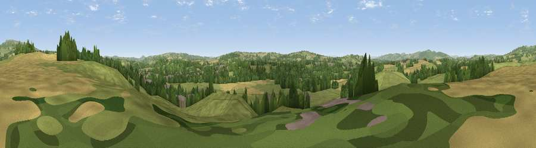

Viewpoint near Burford
#24027 in England · top 65% of its area beats it · near BurfordThe view, rendered

A 360° render of this exact spot computed from the terrain model, tree cover and land cover — summer colours, afternoon light, calibrated against photographs of famous viewpoints. Real trees, hedges and buildings will differ in detail.
The panorama
Grey silhouette: terrain skyline in each direction (720 bearings, Earth curvature and refraction included). Dashed green: skyline with trees (+15 m) and buildings (+8 m) as obstacles. Blue strip: how far the ground is visible on each bearing.
Where the view opens
Wedge length = distance to the farthest visible ground on that bearing (vegetation-aware). Rings at 10, 25 and 50 km.
What fills the view
59% grassland · 19% woodland · 18% cropland · 4% built-up
Angular shares of the visible panorama (visual magnitude), not map area. Landscape diversity 0.47 (0–1 Shannon).
Key numbers
More beautiful places nearby
The staircase of upgrades: each row has a higher view potential than everything closer. Driving times are estimates from straight-line distance, calibrated against real road routing — check an actual route before setting out.
| Place | Direction | Drive | Score |
|---|---|---|---|
| Viewpoint near Burford | NNE · 0 km | ~2 min | 54.8 |
| Viewpoint near Boraston | NE · 2 km | ~6 min | 61.1 |
| Viewpoint near Hope Bagot | NNE · 4 km | ~9 min | 63.1 |
| Viewpoint near Tenbury Wells | SSE · 4 km | ~10 min | 66.3 |
| Viewpoint near Hope Bagot | NNE · 5 km | ~11 min | 73.7 |
| Viewpoint near Cleehill | N · 7 km | ~15 min | 82.3 |
| Titterstone Clee | N · 9 km | ~18 min | 83.8 |
| North Hill | SE · 29 km | ~46 min | 86.8 |
52.31730, -2.61060 · source: screening · position refined by local search. Computed location — check access rights before visiting.